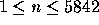

| Humble Numbers |
A number whose only prime factors are 2,3,5 or 7 is called a humble number. The sequence 1, 2, 3, 4, 5, 6, 7, 8, 9, 10, 12, 14, 15, 16, 18, 20, 21, 24, 25, 27, ... shows the first 20 humble numbers.
Write a program to find and print the nth element in this sequence.
The input consists of one or more test cases. Each test case consists of one integer n with  . Input is terminated by a value of zero (0) for n.
For each test case, print one line saying "The nth humble number is number.". Depending on the value of n, the correct suffix "st", "nd", "rd", or "th" for the ordinal number nth has to be used like it is shown in the sample output.
1 2 3 4 11 12 13 21 22 23 100 1000 5842 0
The 1st humble number is 1. The 2nd humble number is 2. The 3rd humble number is 3. The 4th humble number is 4. The 11th humble number is 12. The 12th humble number is 14. The 13th humble number is 15. The 21st humble number is 28. The 22nd humble number is 30. The 23rd humble number is 32. The 100th humble number is 450. The 1000th humble number is 385875. The 5842nd humble number is 2000000000.